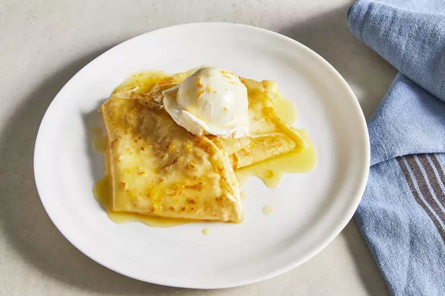

Crêpes Suzette

Description
Crêpes Suzette is a decadent French dessert that's easy to make from scratch with this foolproof recipe. The warm
crêpes are served in a buttery orange sauce flavored with orange liqueur that's set alight in the pan. This flambéed
dessert will have your guests ooh-ing and aah-ing for days! Pairs perfectly with ice cream.
Ingredients
Crêpes
- ½ cup whole milk
- ⅓ cup water
- 2 large eggs
- 1 teaspoon white sugar
- ¼ teaspoon kosher salt
- ¾ cup all-purpose flour
- ¼ cup unsalted butter, melted, divided
- 1 teaspoon freshly grated orange zest
Orange Sauce
- ⅓ cup fresh orange juice
- 3 tablespoons white sugar
- 1 teaspoon grated orange zest
- ¼ cup unsalted butter, cut into pieces
- 1 tablespoon orange liqueur (such as Grand Marnier)
- ¼ teaspoon kosher salt
For Serving
- ¼ cup orange liqueur (such as Grand Marnier)
- ½ cup vanilla ice cream, or to taste
Steps
- To make the crêpes: Combine milk, water, eggs, sugar, and salt in a blender; blend on medium speed until smooth,
about 10 seconds. Add flour and blend until smooth, about 5 more seconds. Add 2 tablespoons of the melted butter
and orange zest; pulse until incorporated, about 3 (1-second) pulses. Cover blender and place in refrigerator; let
rest for 15 minutes.
- Remove crêpe batter from fridge. Heat a 6-inch nonstick skillet or crêpe pan over medium heat. Add 1/2 teaspoon
of the melted butter and swirl to coat skillet. Add 2 tablespoons batter and swirl to coat bottom of skillet.
Cook, undisturbed, until the bottom is lightly golden, and the top is still a little moist, about 1 minute. Swirl
skillet to loosen crêpe and gently flip with a spatula and your fingers. Cook until golden, about 30 seconds.
Transfer to a plate. Repeat with remaining butter and batter.
- To make the orange sauce: Combine orange juice, white sugar, and orange zest in a small skillet over medium
heat. Cook, stirring often, until sugar is dissolved and the liquid starts to bubble, 3 to 4 minutes. Gradually
add butter, piece by piece, stirring constantly, until it is melted and fully incorporated. Let sauce come back up
to a simmer and let simmer until slightly syrupy, stirring occasionally, about 2 to 3 minutes. Stir in orange
liqueur and salt. Remove from the heat.
- Fold each crêpe in half, then half again to make a triangle. Dip the folded crêpes into the hot orange sauce.
Place on a serving platter. Repeat with remaining crêpes, overlapping each crêpe so they are facing the same
direction.
- To serve, pour orange liqueur into the skillet with the remaining orange sauce and place over medium-high. If it
does not ignite automatically, use a long-stemmed lighter and carefully set the liqueur on fire. Let it burn for
about 30 seconds. Pour the flaming liqueur over the crêpes on the platter and serve immediately with ice cream.